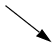
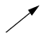
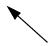

Mouse action1 |
Result |
|---|---|
Ctrl + Click left mouse button and drag |
zoom area (in) |
Ctrl + Click left mouse button and drag |
zoom out |
Ctrl + Click left mouse button and drag |
zoom fit |
Click left mouse button and drag |
moves closest cursor |
Ctrl + Click left mouse button on a scroll bar arrow |
scrolls window to very top or bottom (vertical scroll) or far left or right (horizontal scroll) |
Click middle mouse button in scroll bar (UNIX only) |
scrolls window to position of click |
Shift + scroll with middle mouse button |
scrolls window |
1. If you choose , you do not need to press the Ctrl key.
Keystroke |
Action |
|---|---|
s |
bring into view and center the currently active cursor |
i Shift + i + |
zoom in (mouse pointer must be over the cursor or waveform panes) |
o Shift + o - |
zoom out (mouse pointer must be over the cursor or waveform panes) |
f Shift + f |
zoom full (mouse pointer must be over the cursor or waveform panes) |
l Shift + l |
zoom last (mouse pointer must be over the cursor or waveform panes) |
r Shift + r |
zoom range (mouse pointer must be over the cursor or waveform panes) |
m |
zooms all open Wave windows to the zoom range of the active window. |
Up Arrow Down Arrow |
scrolls entire window up or down one line, when mouse pointer is over waveform pane scrolls highlight up or down one line, when mouse pointer is over pathname or values pane |
Left Arrow |
scroll pathname, values, or waveform pane left |
Right Arrow |
scroll pathname, values, or waveform pane right |
Page Up |
scroll waveform pane up by a page |
Page Down |
scroll waveform pane down by a page |
Tab |
search forward (right) to the next transition on the selected signal - finds the next edge |
Shift + Tab |
search backward (left) to the previous transition on the selected signal - finds the previous edge |
Ctrl+G |
automatically create a group for the selected signals by region with the name Group<n>. If you use this shortcut on signals for which there is already a “Group<n>” they will be placed in that region’s group rather than creating a new one. |
Ctrl + F (Windows) Ctrl + S (UNIX) |
open the find dialog box; searches within the specified field in the pathname pane for text strings |
Ctrl + Left Arrow Ctrl + Right Arrow |
scroll pathname, values, or waveform pane left or right by a page |